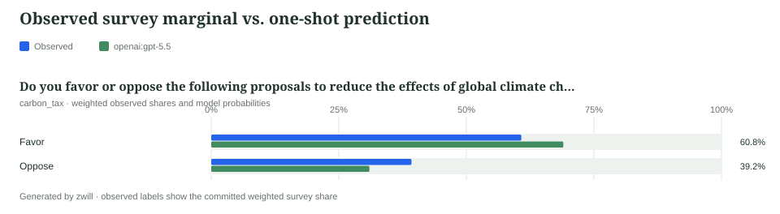
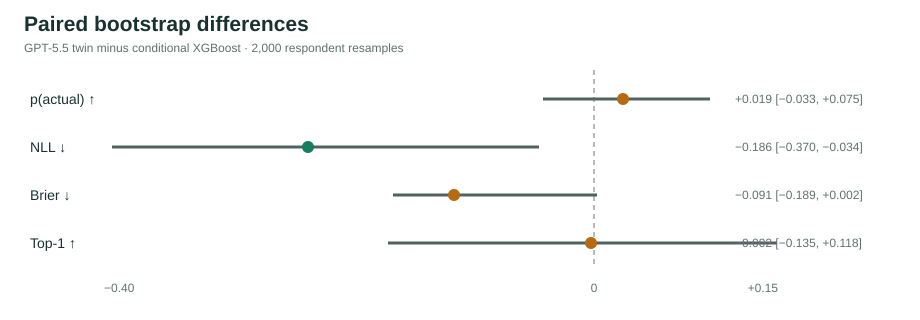

Creating and validating digital twins from survey data
Build twins from respondents’ known answers, hide a target question, predict its probability distribution, and test whether the result contains individual-level signal beyond cheap baselines.
01 What is being tested?
A survey digital twin is an LLM stand-in for one respondent. Its prompt contains approved facts about that person—other survey answers and readable covariates—but not the answer it must predict. The model returns probabilities over the held-out question’s options.
Observed truth
The respondent already answered the target. That answer is hidden from the twin and retained for scoring.
Twin prediction
A full probability vector—not only a top choice—so uncertainty and calibration can be evaluated.
Cheap comparison
A conditional model predicts the same targets from the same allowed respondent information.
Decision gate
The twin must beat the conditional baseline with uncertainty that clears zero, under a clean leakage audit.
02 Study design before model calls
Our worked example uses a fixed excerpt of 100 respondents from Pew Research Center’s American Trends Panel Wave 158. The survey asked whether people favored or opposed six climate-policy proposals. We will hide each person’s answer about taxing corporations based on their carbon emissions and try to predict it from their other five policy answers.
| Component | Choice in this tutorial | Reason |
|---|---|---|
| Target | carbon_tax | Its 62–38 unweighted split is less lopsided than several other battery items. |
| Twin context | The respondent’s other five climate-policy answers | Related individual evidence is available without exposing the target. |
| Validation sample | 100 fixed respondents | Enough to fit and demonstrate XGBoost while keeping remote inference affordable. |
| Conditional baseline | XGBoost | Tests whether an LLM adds value beyond a conventional learner using comparable evidence. |
| Primary score | NLL | Declared before inference because it evaluates the full probability distribution and strongly penalizes confident errors. |
| Secondary scores | Brier, p(actual), and top-1 | Useful corroborating views, but they do not replace the declared primary comparison. |
03 Installation and orientation
This tutorial assumes you have cloned the zwill repository and are standing at its top level—the directory containing README.md, pyproject.toml, and examples/. A deidentified 100-person teaching excerpt is already present under examples/pew_w158_tutorial/, so every data path below can be copied exactly.
git clone https://github.com/expectedparrot/zwill.git
cd zwill
pip install -e ".[conditional-baseline]"
zwill guide
zwill nextThe conditional-baseline extra installs XGBoost and a local sentence-transformers embedding option. zwill guide is the source of truth for the complete workflow. zwill next inspects local state and returns the next command after every completed stage.
Model runs require an EXPECTED_PARROT_API_KEY in a nearby .env. If you do not have one, sign up with Expected Parrot. zwill prepares durable EDSL .ep job packages; EDSL’s ep CLI runs them and writes a Results package. This keeps credentials, remote execution, waiting, and retries in the inference tool rather than the validation tool.
ep inspect jobs.ep, execute it with ep run jobs.ep --output results.ep, and reopen the result in Python with Results.git.load("results.ep").04 Ingest the Pew survey excerpt
The excerpt contains six questions, 100 deidentified respondents with survey weights, and 600 observed answers. Source response codes are expanded to the canonical labels Favor and Oppose. Coded demographic fields were deliberately omitted because their codebook is not bundled here; neither readers nor models should be asked to guess what opaque codes mean.
Create zwill’s local project database and the empty survey record that later commands will address.
zwill init
zwill survey create --name pew_w158Retain the source evidence
A trustworthy analysis keeps source and provenance notes beside the normalized records. We retain this material both for auditability and so an agent can reason over the original study context later when normalized rows alone are insufficient. raw add copies the note into managed state and records its hash, title, type, and original path; it does not automatically place the text into every model prompt.
zwill raw add --survey pew_w158 --id pew_w158_excerpt \
--input-path examples/pew_w158_tutorial/source.md \
--kind documentation \
--title "Pew American Trends Panel Wave 158 excerpt"The excerpt is included for reproducible teaching, criticism, and methodological validation. Before publishing a substantive analysis, consult Pew Research Center’s Wave 158 dataset page, survey methodology, and linked questionnaire and access terms. Pew Research Center bears no responsibility for this tutorial’s analysis or interpretations.
Add one question, respondent, and answer
Before bulk import, it helps to see the three connected records directly. The question establishes wording and legal options; the respondent establishes an ID and survey weight; the answer links that person to one declared option.
Use a disposable survey name for this small manual demonstration so the complete import below remains directly runnable.
zwill survey create --name pew_w158_manual
zwill question add --survey pew_w158_manual \
--question-name carbon_tax \
--question-type multiple_choice \
--question-text "Do you favor or oppose taxing corporations based on the amount of carbon emissions they produce?" \
--question-option Favor --question-option Oppose \
--role survey_item --source-raw pew_w158_excerpt \
--source-note "Wave 158 CCPOLICY battery item b"
zwill respondent add --survey pew_w158_manual \
--respondent-id w158_ccpolicy_100314 \
--weight 0.4510313485401432 \
--source-raw pew_w158_excerpt
zwill answer add --survey pew_w158_manual \
--respondent-id w158_ccpolicy_100314 \
--question carbon_tax --answer FavorFavor is valid because it was declared as an option before the answer arrived. The weight says how much this respondent contributes to weighted population summaries. The deidentified ID is only a stable join key; it is not evidence supplied to the twin.The three kinds of normalized record
Public-use microdata usually arrives as one wide row per respondent. zwill separates that table into three JSON Lines files so its assumptions can be checked explicitly.
| Record | What it describes | Key validation |
|---|---|---|
| Question | Stable name, exact wording, type, options, role, and provenance | Options are declared before answers arrive |
| Respondent | Deidentified ID, survey weight, and provenance | Every answer refers to a known respondent |
| Answer | One respondent’s answer to one question | The value belongs to that question’s declared option set |
JSONL stores one complete JSON object per line without a surrounding array. Representative lines from the bundled files look like this:
{"question_name":"carbon_tax","question_type":"multiple_choice","question_text":"Do you favor or oppose ... taxing corporations based on the amount of carbon emissions they produce","question_options":["Favor","Oppose"],"role":"survey_item","source":{"raw_id":"pew_w158_excerpt","note":"Source codes expanded through the metadata codebook."}}
{"respondent_id":"w158_ccpolicy_100314","weight":0.4510313485401432,"source":{"raw_id":"pew_w158_excerpt","note":"Deidentified source respondent."}}
{"respondent_id":"w158_ccpolicy_100314","question":"carbon_tax","answer":"Favor"}Import the complete 100-person excerpt
The manual records went into pew_w158_manual; the empty pew_w158 survey created at the start is therefore still ready for the complete import. Import all six questions, 100 respondents, and 600 answers:
zwill question import --survey pew_w158 \
--input-path examples/pew_w158_tutorial/questions.jsonl
zwill respondent import --survey pew_w158 \
--input-path examples/pew_w158_tutorial/respondents.jsonl
zwill answer import --survey pew_w158 \
--input-path examples/pew_w158_tutorial/answers.jsonl
zwill next --survey pew_w158Import is a validation boundary, not a best-effort conversion. Unknown respondents, undeclared questions, and illegal options are reported rather than silently changing the survey. Because the excerpt is complete by construction, every respondent should have six accepted answers and there should be no open quarantine issues.
05 Inspect, then commit observed truth
Run each command separately and read what it returns. Start with project status to confirm that the expected records arrived and that the survey has not yet been committed.
zwill statusOutput:
{
"command": "zwill status",
"status": "ok",
"data": {
"project": "default",
"surveys": [{
"name": "pew_w158",
"status": "draft",
"raw_files": 1,
"questions": 6,
"respondents": 100,
"answers": 600,
"open_quarantine_issues": 0,
"committed": false
}]
},
"next_steps": ["zwill commit --survey pew_w158"]
}Next inspect the respondent-by-question table. This is the fastest way to catch shifted columns, untranslated codes, or unexpected missing values.
zwill table --survey pew_w158 --limit 5Output shape:
pew_w158 answers
┏━━━━━━━━━━━━━━━┳━━━━━━━━━━━━━━━┳━━━━━━━━━━━━┳━━━━━━━━━━━━━━━┳━━━━━━━━━━━━━━━┳━━━━━━━━━━━━━━━┳━━━━━━━━━━━━━━━┓
┃ respondent_id ┃ tree_planting ┃ carbon_tax ┃ carbon_captu… ┃ zero_carbon_… ┃ methane_leaks ┃ home_effici… ┃
┡━━━━━━━━━━━━━━━╇━━━━━━━━━━━━━━━╇━━━━━━━━━━━━╇━━━━━━━━━━━━━━━╇━━━━━━━━━━━━━━━╇━━━━━━━━━━━━━━━╇━━━━━━━━━━━━━━━┩
│ w158_…_100314 │ Favor │ Favor │ Favor │ Favor │ Favor │ Favor │
│ w158_…_100363 │ Favor │ Favor │ Favor │ Oppose │ Favor │ Favor │
│ w158_…_100637 │ Favor │ Oppose │ Oppose │ Oppose │ Favor │ Oppose │
└───────────────┴───────────────┴────────────┴───────────────┴───────────────┴───────────────┴───────────────┘Create a fuller HTML profile to inspect exact wording, weights, missingness, and weighted response distributions.
zwill survey report --survey pew_w158 --format html \
--path survey-profile.htmlThe response reports the written path and the six-question, 100-respondent, 600-answer dimensions. Open survey-profile.html before committing and verify that every item is binary Favor/Oppose and has 100 observed responses.
commit freezes the respondents and truth marginals used later for scoring. It is not merely a save button.
zwill commit --survey pew_w158Output:
{
"command": "zwill commit",
"status": "ok",
"data": {
"survey": "pew_w158",
"respondent_count": 100,
"question_count": 6,
"answer_count": 600,
"truth_marginal_count": 6
}
}Now ask zwill what stage follows from the committed state:
zwill next --survey pew_w158It reports run_twins because the observed truth is committed but no held-out twin run has been imported yet.
| Field | Role in validation | Treatment |
|---|---|---|
carbon_tax | Held-out target | Wording and options shown; respondent’s answer hidden |
| The other five policy items | Respondent context | Answers shown to both the twin and conditional baseline |
| Survey weight | Population estimation | Used for weighted summaries, never shown as personality evidence |
| Respondent ID | Stable join key | Used to pair predictions with truth, not as predictive evidence |
06 Establish the one-shot marginal
Before constructing person-specific twins, ask a model for the population distribution of carbon_tax. This one-shot task contains the question and its two legal options but no respondent. It tests whether the model can approximate aggregate opinion from general knowledge alone.
1. Build the probability job
zwill edsl build --survey pew_w158 --target probability-job \
--questions carbon_tax --model openai:gpt-5.5 \
--path one_shot_jobs.epThis creates the local execution specification. It does not contact the model.
2. Inspect the job
ep inspect one_shot_jobs.epOutput:
{
"status": "ok",
"data": {
"object_type": "Jobs",
"length": 1,
"question_count": 1,
"question_names": ["response_probabilities"],
"agent_count": 0,
"scenario_count": 1,
"model_count": 1
},
"warnings": []
}There is one scenario because this is one population-level question, not 100 respondent agents. Inspection lets you catch the wrong target, model, or job size before paying for inference.
3. Run it with EDSL
ep run one_shot_jobs.ep --output one_shot_results.epThe ep CLI performs remote inference and stores the completed EDSL Results object at the requested path.
4. Import the result
zwill prob-results import --survey pew_w158 \
--input-path one_shot_results.epThe tutorial run imported one of one rows with no issues and cost approximately $0.03. Its response returned data.job_id: a4399bc71f1b07e7. Your run receives its own ID; copy it wherever the tutorial shows <probability_job_id>.
5. Plot predicted versus observed marginals
A marginal is the overall share choosing each option, without retaining which respondent chose it. In this excerpt, 62 of 100 respondents favored the carbon tax and 38 opposed it. After applying the bundled survey weights, the observed shares are 60.8% Favor and 39.2% Oppose.
Zwill aligns the two probabilities returned by the language model with the ingested canonical options Favor and Oppose, then plots them beside those weighted observed shares:
zwill prob-results report --survey pew_w158 \
--job-id <probability_job_id> --format svg \
--path one-shot-marginals.svg
Open your generated one-shot-marginals.svg. The observed bars come from committed microdata; predicted bars come from the imported model result. This run showed useful population-level knowledge, but it does not establish that the model can distinguish one respondent from another.
07 Predict held-out answers
We now move from “Can a model guess the aggregate split?” to “Can it assign better probabilities to each real person?” The committed survey already contains every respondent’s carbon_tax answer. Zwill keeps that answer locally for scoring but removes it from the scenario sent to the model.
| Model may see | Model must not see |
|---|---|
The exact carbon_tax wording and its Favor/Oppose options | The respondent’s recorded carbon_tax answer |
| The respondent’s answers to the other five climate-policy proposals | Target summaries or derived fields that reveal the hidden answer |
| General survey context explicitly approved for the study | Survey weight or respondent ID presented as personality evidence |
Write and review the validation plan
Create a reusable specification for the run: the held-out target, permitted context, respondents, model, and primary metric. The tutorial includes all 100 excerpt respondents, so no sampling or outcome-based stratification is needed.
zwill twin-experiment init-plan \
--survey pew_w158 \
--plan-id carbon_tax_v1 \
--heldout-questions carbon_tax \
--context-questions tree_planting,carbon_capture_credit,zero_carbon_power,methane_leaks,home_efficiency_credit \
--model openai:gpt-5.5 --primary-metric nll \
--path carbon_tax_v1.jsonThe response reports prediction_count_estimate: 100 and writes the plan beneath zwill’s output root as zwill_work/carbon_tax_v1.json. Validation checks question names, context policy, arms, and the prediction-count calculation without approving or running anything:
zwill twin-experiment validate \
--input-path zwill_work/carbon_tax_v1.jsonExpected result: status: ok, no validation errors, one held-out question, one arm, one model, and an estimated 100 predictions. Treat any error or unexpected count as a stop condition.
Read the plan itself before approving it. Confirm that carbon_tax is the only held-out target, precisely five different questions are context, all 100 eligible respondents are included, the model is intended, and the estimate is 100 calls.
zwill twin-experiment approve \
--input-path zwill_work/carbon_tax_v1.json \
--approved-by tutorial_reader \
--note "Approved one target, five context questions, all 100 eligible respondents, one model, and NLL as the primary metric."Approval records who reviewed which design and when. It is evidence of a deliberate specification, not a claim that the design is scientifically sufficient.
Expected result: the response shows approval.approved: true, approved_by: tutorial_reader, the review note, and the unchanged 100-prediction estimate. The command updates the plan file in place, so export-plan below reads the approved version.
Export and inspect the twin job
zwill twin-experiment export-plan \
--input-path zwill_work/carbon_tax_v1.json \
--output-dir carbon_tax_v1_jobs
ls carbon_tax_v1_jobsThe directory contains manifest.json plus an EDSL Jobs package whose generated name begins 01_baseline_ and ends _jobs.ep. The manifest maps that path to the approved arm and records the expected 100 predictions. Substitute the actual filename below:
ep inspect carbon_tax_v1_jobs/<jobs.ep>Expected inspection: one EDSL probability question, 100 scenarios, one model, and therefore 100 runnable jobs. If those counts differ, stop and fix the plan rather than running an unexpectedly large or incorrectly scoped package.
Run with EDSL and import
ep run carbon_tax_v1_jobs/<jobs.ep> \
--output carbon_tax_twin_results.ep
zwill twin-results import --survey pew_w158 \
--input-path carbon_tax_twin_results.epThe completed tutorial run produced 100 of 100 interviews with no exceptions. Import extracted all 100 predictions with zero issues, returned job_id: f87aa97344addd4a, and reported a total model cost of $1.0234. Your run receives its own ID; copy it into <twin_job_id>. Investigate and retry malformed rows instead of silently analyzing a selective subset.
Inventory the imported run
zwill twin-study list --survey pew_w158The returned table should show one imported job, 100 rows, zero issues, carbon_tax as the held-out question, and the model you ran. This is the quickest check that zwill is about to score the intended artifact.
job_id rows issues heldout_questions models
f87aa97344addd4a 100 0 carbon_tax openai:gpt-5.5Read the respondent-level twin report
zwill twin-results report --survey pew_w158 \
--job-id <twin_job_id>The command returns two tables with different purposes. The first is a case-by-case twin report: one row for each respondent’s hidden answer.
pew_w158 digital twin report
┏━━━━━━━━━━━━┳━━━━━━━━━━━━┳━━━━━━━━┳━━━━━━━━━━━━━━━━┳━━━━━━━━━━━┳━━━━━━━━━┳━━━━━━━━━━━┳━━━━━━━┳━━━━━━━━┳━━━━━━┓
┃ respondent ┃ heldout ┃ actual ┃ model ┃ p(actual) ┃ uniform ┃ empirical ┃ nll ┃ brier ┃ top1 ┃
┡━━━━━━━━━━━━╇━━━━━━━━━━━━╇━━━━━━━━╇━━━━━━━━━━━━━━━━╇━━━━━━━━━━━╇━━━━━━━━━╇━━━━━━━━━━━╇━━━━━━━╇━━━━━━━━╇━━━━━━┩
│ …100637 │ carbon_tax │ Oppose │ openai:gpt-5.5 │ 0.820 │ 0.500 │ 0.392 │ 0.198 │ 0.065 │ 1 │
│ …108592 │ carbon_tax │ Favor │ openai:gpt-5.5 │ 0.900 │ 0.500 │ 0.608 │ 0.105 │ 0.020 │ 1 │
│ … │ … │ … │ … │ … │ … │ … │ … │ … │ … │
└────────────┴────────────┴────────┴────────────────┴───────────┴─────────┴───────────┴───────┴────────┴──────┘| Column | What it captures for one respondent |
|---|---|
respondent | The deidentified join key used to pair prediction and observed truth. |
heldout | The question hidden from the model—carbon_tax on every row here. |
actual | The answer retained locally and revealed only after inference for scoring. |
model | The model that returned the probability distribution. |
p(actual) | The probability assigned to the answer that person actually gave. Higher is better and partial credit is possible. |
uniform | The probability from splitting mass equally over legal options: 0.5 for either answer here. |
empirical | The committed weighted marginal probability of this person’s actual option. It uses population truth, not person-specific evidence, so it is an oracle reference rather than a deployable predictor. |
nll | -log(p(actual)). Lower is better; confidently wrong predictions receive a large penalty. |
brier | Squared error across both Favor and Oppose probabilities. Lower is better. |
top1 | 1 when the higher-probability option equals the actual answer, otherwise 0. |
Read the aggregate model summary
The second table averages those case-level scores over all usable respondents. It answers how the run performed overall, while the first table shows which people generated that average.
model summary
┏━━━━━━━━━━━━━━━━┳━━━━━━┳━━━━━━━━━━━┳━━━━━━━━━━━┳━━━━━━━━━━━━━┳━━━━━━━┳━━━━━━━━━━━━━┳━━━━━━━━━━━━━━━┳━━━━━━━┳━━━━━━━━━━━━━━━┳━━━━━━━━━━━━━━━━━┳━━━━━━┓
┃ model ┃ rows ┃ p(actual) ┃ uniform p ┃ empirical p ┃ nll ┃ uniform nll ┃ empirical nll ┃ brier ┃ uniform brier ┃ empirical brier ┃ top1 ┃
┡━━━━━━━━━━━━━━━━╇━━━━━━╇━━━━━━━━━━━╇━━━━━━━━━━━╇━━━━━━━━━━━━━╇━━━━━━━╇━━━━━━━━━━━━━╇━━━━━━━━━━━━━━━╇━━━━━━━╇━━━━━━━━━━━━━━━╇━━━━━━━━━━━━━━━━━╇━━━━━━┩
│ openai:gpt-5.5 │ 100 │ 0.690 │ 0.500 │ 0.523 │ 0.513 │ 0.693 │ 0.670 │ 0.329 │ 0.500 │ 0.477 │ 0.762│
└────────────────┴──────┴───────────┴───────────┴─────────────┴───────┴─────────────┴───────────────┴───────┴───────────────┴─────────────────┴──────┘| Column | What the summary captures | How to read it |
|---|---|---|
rows | Successfully scored respondent–question predictions. | It should be 100. Fewer rows require investigation. |
p(actual) | Mean probability assigned to each respondent’s observed answer. | Higher is better; 0.5 is the binary uniform floor. |
uniform p | A no-information prediction split equally across legal options. | Two options imply 1 / 2 = 0.5. |
empirical p | Mean probability assigned by the weighted observed target marginal. | An oracle aggregate reference: useful for comparison, unavailable for a genuinely new target. |
nll | Mean negative log likelihood. | Lower is better and confident errors are strongly penalized. |
uniform nll | NLL from assigning 0.5 to each option. | -log(0.5) = 0.693; the twin should be below it. |
empirical nll | NLL from assigning everyone the committed weighted target distribution. | Tests whether person-specific probabilities add signal beyond knowing the aggregate split. |
brier | Mean squared error of the complete binary distribution. | Lower is better. |
uniform brier / empirical brier | The same distributional error for the two reference predictors. | The twin should be lower, but the XGBoost comparison remains the stronger deployable test. |
top1 | Share whose highest-probability option matches the observed answer. | Higher is better, but it ignores confidence. |
These are the weighted results from the completed tutorial run. The twin beat uniform and the weighted empirical-marginal oracle on mean NLL: 0.513 versus 0.693 and 0.670 respectively. Its weighted top-1 accuracy was 76.2%. Those comparisons are encouraging, but XGBoost is the more demanding respondent-conditioned benchmark.
Write reusable reports and aggregate diagnostics
zwill twin-results report --survey pew_w158 \
--job-id <twin_job_id> --format html --view full \
--path twin-results.html
zwill twin-results report --survey pew_w158 \
--job-id <twin_job_id> --format csv \
--path twin-results.csv
zwill twin-results marginal-diagnostics --survey pew_w158 \
--job-id <twin_job_id> \
--target probability-job \
--target-job-id <probability_job_id>The HTML supports visual inspection, the CSV provides one scored row per respondent, and marginal diagnostics compare the average of 100 person-specific distributions with the one-shot population prediction. Those aggregate comparisons complement—but cannot replace—the respondent-level scores.
What marginal diagnostics returns: the selected twin and one-shot job IDs, aligned option labels, the mean twin-implied distribution, the one-shot distribution, and distance measures between them. A small distance means the two methods agree about the aggregate; it says nothing by itself about matching individuals.
08 Audit the prompts
Audit at least one imported run before trusting its scores. The run report exposes construction metadata, prompt templates, rendered scenarios, raw responses, malformed rows, and import issues.
zwill twin-results run-report --survey pew_w158 \
--job-id <twin_job_id> --format html --path twin-audit.htmlOpen twin-audit.html and inspect what was actually sent to the model. In particular, confirm that each scenario contains the five approved policy answers but not that respondent’s carbon_tax answer, the weighted target marginal, or any other target-revealing material.
The command response confirms the written HTML path and audited job ID. The page should report 100 imported rows, zero import issues, the approved construction metadata, and rendered examples containing five context answers. Record any discrepancy rather than relying only on the score tables.
This manual prompt inspection checks the study’s construction. The statistical leakage audit in the validation bundle provides a complementary check for unusually strong context–target relationships. Both must be clean before performance comparisons are credible.
09 Compare the twins with XGBoost
Now ask whether the language-model twins add predictive value beyond a cheaper conventional model. This is a separate question from prompt auditing: a perfectly non-leaky twin can still perform no better than an ordinary supervised baseline.
Fit the conditional XGBoost baseline
Beating uniform probabilities is a weak test. A useful digital twin should also beat a conventional supervised learner given comparable respondent information. twin-validate therefore fits zwill’s conditional XGBoost baseline. It embeds the question texts and each question–option pair, represents each respondent by their non-held-out selections, and learns how those semantic features predict an option.
The fit is leave-one-question-out across survey items. For carbon_tax, XGBoost trains on the 100 respondents’ labeled rows from the other five questions—1,000 candidate-option training rows for five binary items. The target question’s own answers and marginal never enter training. It then transfers what it learned across questions to predict Favor/Oppose for the same 100 people scored by the language-model job, making the comparison paired.
carbon_tax labels. That stricter exclusion makes it deployable to a genuinely new target, but it answers a different question from “how well can supervised learning predict this target once labeled target examples exist?” For that latter use case, add a respondent-fold baseline trained on target labels and keep train/test respondents separate. Zwill can also include readable respondent covariates; this excerpt deliberately contains none because the demographic codebook is not bundled.zwill twin-validate --survey pew_w158 \
--jobs <twin_job_id> --out report_out/validation \
--embedder edsl --require-baseline \
--n-boot 2000 --seed 42--embedder edsl reproduces this tutorial run by obtaining text-embedding-3-small vectors through Expected Parrot. --require-baseline makes validation fail rather than quietly omit XGBoost if embedding or fitting cannot complete. For an API-free run, use --embedder sentence-transformers; changing the embeddings can change the baseline and must be recorded as a different specification.
On success, the baseline step reports model_type: xgboost, training_rows: 1000, prediction_rows: 100, and scored_questions: ["carbon_tax"]. Zwill stores those predictions under baseline:conditional-embedding and computes exactly the same NLL, Brier, p(actual), and top-1 fields used for the language-model twins.
Read the twin-versus-XGBoost result
Representative completion output: status: ok, baseline.model_type: xgboost, baseline.training_rows: 1000, baseline.prediction_rows: 100, bootstrap.resamples: 2000, and paths for report.html, report_data.json, bootstrap.json, leakage_audit.json, and manifest.json. A missing required baseline or failed leakage step makes the command fail instead of yielding a partial success.
Open report_out/validation/report.html. Unlike the earlier one-job report, its model summary contains both the language-model twin and baseline:conditional-embedding. The respondent-level table also includes XGBoost rows, so you can see whether both methods fail on the same people or in different ways.
The validation command also resamples respondents to estimate paired bootstrap intervals for the difference between each twin model and XGBoost. Those results are in report_out/validation/bootstrap.json. For p(actual) and top-1, higher is better; for NLL and Brier, lower is better. Interpret the direction of each twin-minus-baseline difference accordingly, and do not claim an improvement when its uncertainty interval includes zero.
Results from the completed tutorial run
| Metric | GPT-5.5 twin | XGBoost | Paired twin − XGBoost [95% CI] | Interpretation |
|---|---|---|---|---|
| p(actual) | 0.690 | 0.671 | +0.019 [−0.033, +0.075] | Point estimate favors the twin; interval includes zero. |
| NLL | 0.513 | 0.698 | −0.186 [−0.370, −0.034] | Twin is better; the full interval is below zero. |
| Brier | 0.329 | 0.420 | −0.091 [−0.189, +0.002] | Point estimate favors the twin; interval narrowly includes zero. |
| Top-1 accuracy | 0.762 | 0.764 | −0.002 [−0.135, +0.118] | Essentially tied and statistically inconclusive. |

NLL was declared as the primary metric before export. On that metric, the twin produced meaningfully better probabilities than XGBoost: its paired interval clears zero in the favorable, negative direction. The methods had nearly identical top-1 accuracy, so the gain came from probability quality rather than getting more binary choices correct. The leakage audit examined all five context–target pairs and flagged none.
| Artifact | What it captures |
|---|---|
report_out/validation/report.html | The respondent-level and aggregate scores for both the language-model twins and the conditional XGBoost baseline. |
bootstrap.json | Point estimates and paired confidence intervals for twin-versus-XGBoost metric differences. |
leakage_audit.json | Checks for suspicious relationships that could make the held-out answer recoverable from supposedly permitted inputs. |
report_data.json | The structured inputs behind the validation report, including twin rows, baseline rows, bootstrap results, and audit summary. |
manifest.json | The job IDs, settings, steps, and paths needed to trace and reproduce the validation bundle. |
zwill next --survey pew_w158Run zwill next after validation and follow any remaining audit, sample-size, or approval steps it reports before treating the evidence as complete.
10 Read the evidence
Run zwill guide show interpreting-results before writing conclusions. Lower NLL and Brier scores are better. Accuracy is useful as a sanity check, but the headline is the paired difference against the conditional baseline.
For this run, the NLL metric prespecified in the approved plan passes the table’s comparison gate: −0.186 [−0.370, −0.034] against XGBoost. This is not a public preregistration: the tutorial target was chosen while developing the example. The Brier interval barely crosses zero, while p(actual) and top-1 remain inconclusive. That is mixed but useful evidence: the twin assigned probabilities better on the primary scoring rule without improving classification accuracy.
Also inspect calibration, individual failures, malformed-row rate, and marginal fit. Expected calibration error (ECE) groups predictions by confidence and compares average confidence with observed frequency; lower is better. The twin’s ECE in this run was 0.0446, but a single small binary sample can make calibration estimates unstable, so inspect the calibration plot and confident misses as well. The empirical marginal is an oracle benchmark because the target distribution has already been observed; it is not deployable for a genuinely new target.
11 Assemble the evidence and author the report
Zwill’s responsibility ends with a rich, auditable evidence package. It should calculate the metrics, retain respondent-level predictions and raw model evidence, document the study design, fit the baselines, run the leakage and bootstrap analyses, and expose all of that in structured files. It should not decide the final narrative or send a second EDSL job to a model to write one.
Build the evidence package
zwill report build --survey pew_w158 --path report_out \
--job-id <twin_job_id> \
--probability-job-id <probability_job_id>This command assembles the survey profile, one-shot results, twin scores, run audit, and available diagnostics into report_out/. Because validation was written to report_out/validation/, zwill detects that bundle and links its XGBoost comparison, bootstrap intervals, leakage audit, and structured evidence from the consolidated index. The result is one publishable evidence tree rather than two disconnected folders.
| Evidence for the coding agent | What it contributes |
|---|---|
report_out/index.html | A navigable inventory of the survey profile and currently available technical pages. |
report_out/validation/report_data.json | Structured study design, twin and XGBoost rows, score summaries, bootstrap comparisons, calibration diagnostics, and audit results. |
report_out/validation/report.html | The human-readable technical validation report against which narrative claims can be checked. |
report_out/validation/bootstrap.json | The paired uncertainty intervals needed to distinguish evidence from sampling noise. |
report_out/validation/leakage_audit.json | The context–target checks that must be read before making a positive performance claim. |
twin-audit.html | Rendered prompts, respondent context, raw responses, construction metadata, and import issues. |
examples/pew_w158_tutorial/source.md | Survey provenance, scope, and the limitations of the bundled excerpt. |
Have the coding agent write the final narrative
The coding agent should read those artifacts, decide which facts matter for the intended audience, and author the final HTML or Markdown report directly. That is a reasoning and communication task: it requires reconciling the clean leakage audit, the significant NLL advantage over XGBoost, the inconclusive accuracy comparison, the one-question scope, and the intended decision use. A generic generated paragraph cannot make those judgments reliably.
Ask the agent to keep every substantive claim traceable to a named artifact or reported value. The final report should explain the survey and holdout design, translate the metrics into plain language, compare the twins with XGBoost, discuss individual failures and calibration, state what the pilot supports, and distinguish that from what would require a larger multi-question study.
Publish the agent-authored report together with—or linked to—the technical evidence package. Readers should be able to move from the conclusion back to the validation table, bootstrap interval, leakage result, and underlying study design.
12 From pilot to a broader study
- Use the complete documented survey rather than the 100-person teaching excerpt, and include readable codebook-expanded covariates when they are legitimate predictors.
- Select 5–10 defensible held-out questions and declare leakage exclusions.
- Create and approve a
twin-experimentplan with sample, seed, models, approaches, cost, outputs, and decision criteria. - Prefer at least 200 scored respondents—or all eligible respondents when fewer exist—and flag sparse options and subgroups.
- Compare prompt or model variants through the same gate; do not choose a winner from a bare run.
# The two commands to keep using throughout the study:
zwill guide
zwill next --survey <survey_name>zwill also supports numeric targets through quantile predictions, ranking and MaxDiff batteries through a separate rank-utility flow, and open-ended targets by first coding responses into themes. The bundled guide routes each question type to its proper validation workflow.